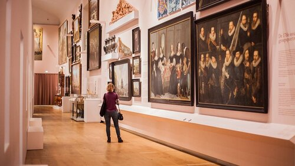
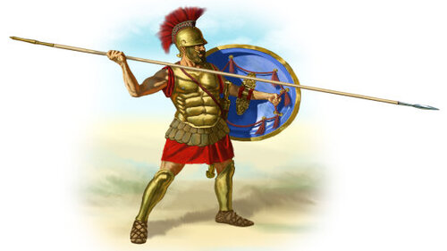
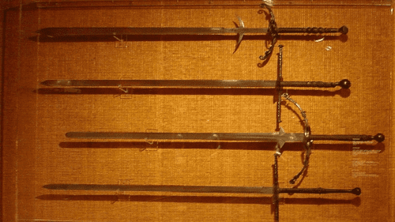
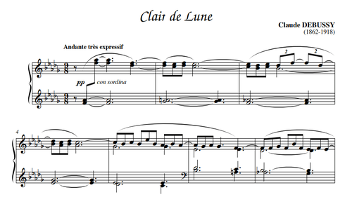
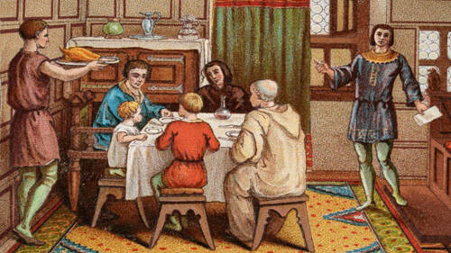
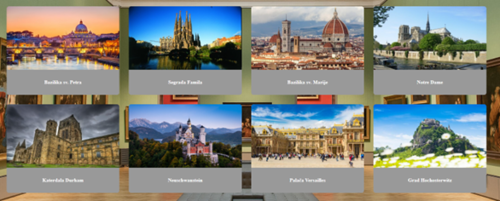
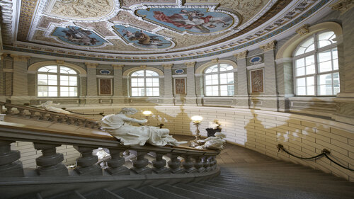

Zgodovina muzeja in obratovalni čas.
Razišči zgodovino Evrope in svojih prednikov
Evropa je zgodovina, zapisana v kamen in pergament, v slikah in pripovedeh, v vojnah in miru.
V Muzeju Evropa včasih te zgodbe oživljamo – ne kot zaprašene relikvije, temveč kot živo pričevanje o tem, kdo smo in od kod prihajamo.
Naš muzej je most med stoletji. Sprehodite se skozi dobe, ko so:
- rimske legije utrjevale meje civilizacije,
- srednjeveški gradovi odmevali od viteških legend,
- razsvetljenski misleci podirali stare dogme,
- industrialne revolucije spreminjale obraze mest.
Ker preteklost ni nikoli resnično minila – le čaka, da jo na novo razumemo.

O Muzeju
Cerkve
Opis 5 najbolj zanmenitih cerkev v evropi.
Gradovi
Opis 5 najznamenitejših gradov v evropi.

Oklepi
Zbirka oklepov, njihove znamenitosti in uporaba.

Orožje
Zgodovinsko najbolj prepoznana orožja in njihov namen.

Umetnost
Zgodovina umetnosti v Evropi.

Vitezi
Najbolj znani vitezi v evropski zgodovini.

Življenje
Življenje starih prebivalev evrope in jihova pomembnost.

Galerija
Galerija slik iz vseh zbirk.

Kontakt
Kotakt muzeja in njegova lokacija.
Da boste lahko mirno in varno raziskovali naš muzej, imamo omejeno število obiskovalcev.
Če si želite zagotoviti lažji vstop, si lahko rezervirate brezplačno vstopnico vnaprej.
Tako boste prejeli vse potrebne informacije in imeli prednost, ko bo gužva.
Izberite si datum in čas, ki vam ustreza. Če za želeni termin ni več prostora, se lahko kljub temu oglasite
– vsak dan sprejemamo obiskovalce tudi brez naročila na vhodu Montague Place. V primeru velikega števila ljudi
bodo imeli tisti z vstopnicami prednost.
Če želite ogledati razstavo, si oglejte našo ponudbo. Z vstopnico za razstavo lahko obiščete tudi stalno zbirko.
Potrebujete pomoč zaradi posebnih potreb? Sporočite nam, da vam lahko ustrezno pomagamo.
Pomembne informacije:
- Vstop v stalno zbirko je brezplačen.
- Na enkrat lahko prijavite največ 9 ljudi.
- Vstopnico boste prejeli po e-pošti.
- Če ni prostih terminov, poskusite kasneje – redno jih dopolnjujemo.
- Pridite točno ob svojem času! Če zamudite, vas bomo poskušali spraviti noter, a boste morda morali počakati. Prej kot rezervirano ne prihajte.
Če želite biti obveščeni o novostih, se prijavite na naše novice.
Kot član lahko obiščete:
- vse stalne razstave
- posebno razstavo Evropske zgodbe: poti preteklosti (do 15. novembra 2025)
- tematsko razstavo Tradicije srednjeveških mest (do 20. decembra 2025)
brez potrebe po predhodni rezervaciji.
Pri vstopu prosimo, da predložite veljavno člansko izkaznico. V primeru težav se obrnite na naše informacijsko osebje.
Želite postati član ali izvedeti več o članstvu? Vse informacije najdete na naši spletni strani ali pa vas z veseljem svetujemo na licu mesta.
V Muzeju Evropa včasih vas popeljemo na potovanje skozi stoletja evropske zgodovine, umetnosti in vsakdanjega življenja.
Naše stalne in začasne razstave ponujajo edinstven vpogled v razvoj našega kontinenta - od antičnih civilizacij do moderne dobe.
Načrt muzeja vam omogoča lažjo orientacijo po naših prostorih, kjer vsak kotiček pripoveduje svojo zgodbo.
Za globlje razumevanje eksponatov vam priporočamo:
- Raziskovalne poti - vodniki po posebnih zbirkah, prilagojeni različnim zanimanjem
- Raziskovalne poti - interaktivne aktivnosti za družine in šolske skupine
- Strokovno vodeni ogledi - redne tematske ture z našimi kustodi
Za popolno izkušnjo obiska si lahko naložite našo uradno muzejsko aplikacijo, ki vključuje:
- Audio vodiče v več jezikih
- Podrobne opise ključnih eksponatov
- Interaktivne zemljevide
- Posebne vsebine za mlajše obiskovalce
Aplikacija je na voljo za brezplačno prenos. Priporočamo, da si prinesete lastne slušalke ali pa jih lahko pridobite pri informacijskem pultu.
Naš muzej nudi številne priložnosti za globlje ukvarjanje z evropsko kulturno dediščino. Redno organiziramo:
- Delavnice tradicionalnih obrti
- Predavanja strokovnjakov
- Interaktivne prireditve za vse generacije
- Posebne dogodke ob evropskih praznikih
Za najnovejše informacije o našem programu in novostih vas vabimo, da se naročite na naše novice ali nas spremljate na družbenih omrežjih.
Vaš obisk lahko postane še posebnejši z eno izmed naših prilagodljivih storitev, ki jih ponujamo za različne potrebe obiskovalcev. Naše uslužbence lahko kadarkoli kontaktirate za dodatna pojasnila ali priporočila.